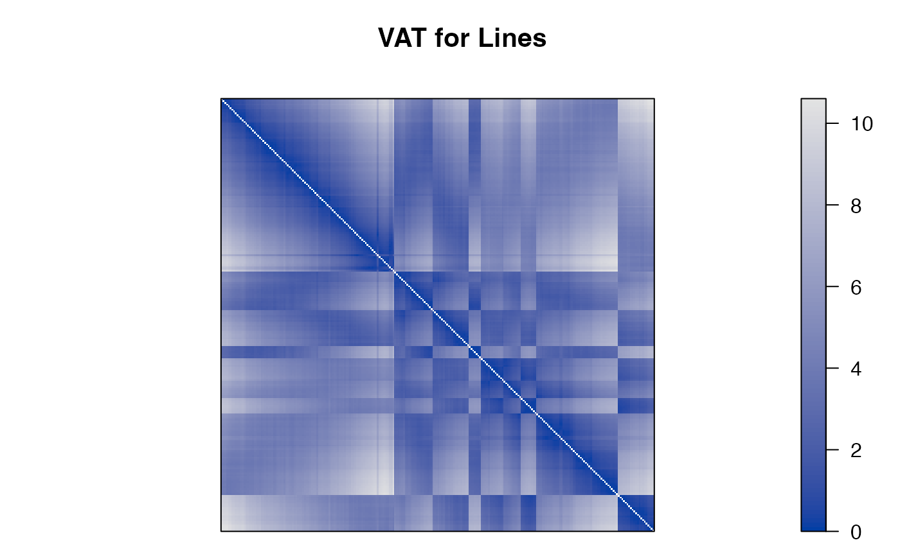
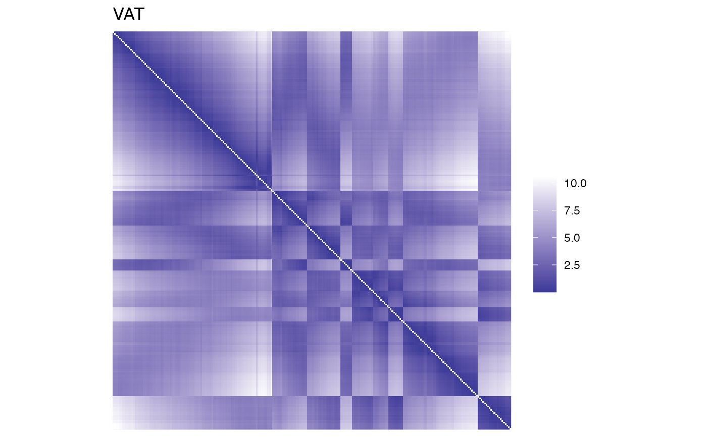
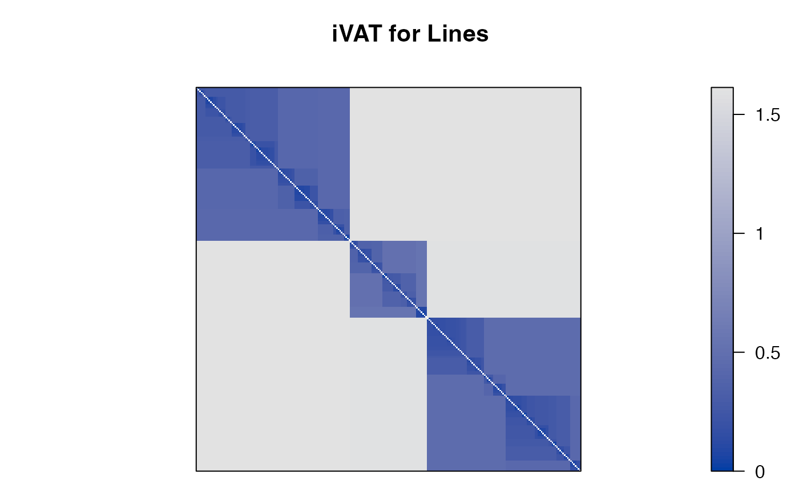
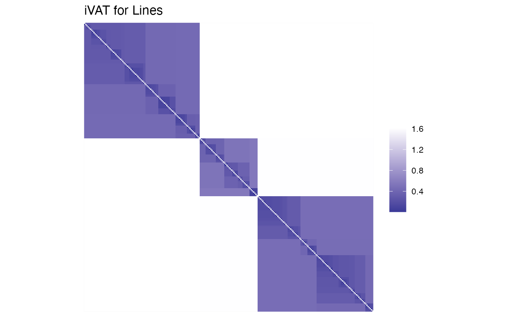
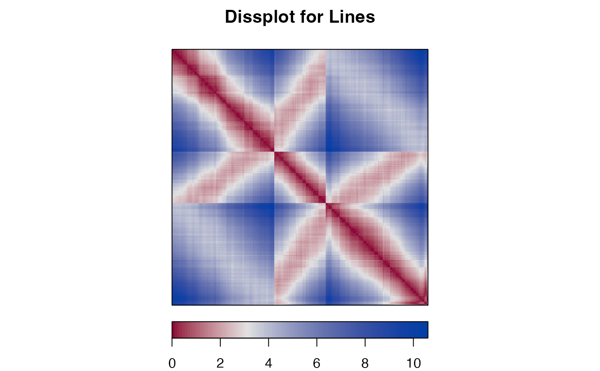
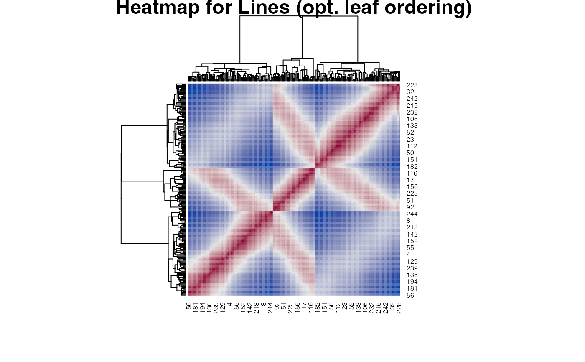

Implements Visual Analysis for Cluster Tendency Assessment (VAT; Bezdek and Hathaway, 2002) and Improved Visual Analysis for Cluster Tendency Assessment (iVAT; Wang et al, 2010).
Usage
VAT(x, upper_tri = TRUE, lower_tri = TRUE, ...)
iVAT(x, upper_tri = TRUE, lower_tri = TRUE, ...)
path_dist(x)
ggVAT(x, upper_tri = TRUE, lower_tri = TRUE, ...)
ggiVAT(x, upper_tri = TRUE, lower_tri = TRUE, ...)Details
path_dist() redefines the distance between two objects as the minimum
over the largest distances in all possible paths between the objects as used
for iVAT.
References
Bezdek, J.C. and Hathaway, R.J. (2002): VAT: a tool for visual assessment of (cluster) tendency. Proceedings of the 2002 International Joint Conference on Neural Networks (IJCNN '02), Volume: 3, 2225--2230.
Havens, T.C. and Bezdek, J.C. (2012): An Efficient Formulation of the Improved Visual Assessment of Cluster Tendency (iVAT) Algorithm, IEEE Transactions on Knowledge and Data Engineering, 24(5), 813--822.
Wang L., U.T.V. Nguyen, J.C. Bezdek, C.A. Leckie and K. Ramamohanarao (2010): iVAT and aVAT: Enhanced Visual Analysis for Cluster Tendency Assessment, Proceedings of the PAKDD 2010, Part I, LNAI 6118, 16--27.
See also
Other plots:
bertinplot(),
dissplot(),
hmap(),
palette(),
pimage()
Examples
## lines data set from Havens and Bezdek (2011)
x <- create_lines_data(250)
plot(x, xlim=c(-5,5), ylim=c(-3,3), cex=.2)
d <- dist(x)
## create regular VAT
VAT(d, main = "VAT for Lines")

## same as: pimage(d, seriate(d, "VAT"))
## ggplot2 version
if (require("ggplot2")) {
ggVAT(d) + labs(title = "VAT")
}
#> Loading required package: ggplot2

## create iVAT which shows visually the three lines
iVAT(d, main = "iVAT for Lines")

## same as:
## d_path <- path_dist(d)
## pimage(d_path, seriate(d_path, "VAT for Lines"))
## ggplot2 version
if (require("ggplot2")) {
ggiVAT(d) + labs(title = "iVAT for Lines")
}

## compare with dissplot (shows banded structures and relationship between
## center line and the two outer lines)
dissplot(d, method = "OLO_single", main = "Dissplot for Lines", col = bluered(100, bias = .5))

## compare with optimally reordered heatmap
hmap(d, method = "OLO_single", main = "Heatmap for Lines (opt. leaf ordering)",
col = bluered(100, bias = .5))
